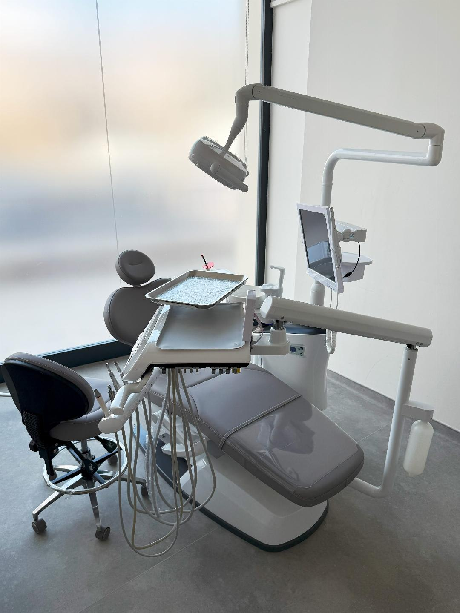

Zirconia crowns
Often selected when strength, stability, and a refined appearance are all needed in the same case.
Crowns
Crowns are used when damaged, restored, worn, or discolored teeth need a more stable structure and a cleaner aesthetic result. The right plan depends on how much tooth support remains and what the final smile needs to achieve.
Crown options
Often selected when strength, stability, and a refined appearance are all needed in the same case.
Used when translucency and front-tooth appearance are the main priority and the case supports a lighter restorative option.
Some cases need a broader crown strategy across multiple teeth to rebuild function, bite balance, and smile harmony together.
Smile design considerations
The amount of remaining tooth structure influences whether crowns are indicated and how conservative the preparation can be.
Shade and tooth shape should match the patient's facial structure, existing teeth, and the overall smile line.
Good aesthetics only work long term when the bite, edge contacts, and daily function are also properly balanced.
Single crowns and full-smile crown cases need different planning depth, different timelines, and different lab sequencing.

Dental room visuals

Used for smile-focused cases where design, shade, and proportion are discussed in more detail.

Chairside environment prepared for examination, preparation, and restorative delivery.

Closer room details that support precise restorative work and chairside review.
Dental doctors
Oral and Maxillofacial Surgery
Implant and Prosthetic Dentistry
Restorative and Aesthetic Dentistry
Crown consultation
Front smile photos, close-up tooth photos, and any previous dental work details make the first consultation more useful.